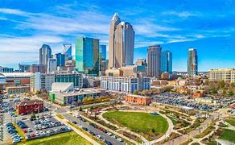

About me
My name is gage Carter. I was born and raised in Mesa Arizona for my whole life, up until march of 2024. Me and my wife decided to move across the country to Charlotte, North Carolina, to be closer to my wifes family, who had also only recently moved to Charlotte as well. I absolutely love CAD design and am beginning to grow fond of the programming classes that I am taking as well. I love to be outdoors whenever possible, especially in a camping setting. I am excited to see what new things I can learn in this class!
Charlotte, North Carolina
In the last few years, Charlotte has grown considerably, and is now a widely known center of technology as well as arts and culture. Home to many large corporate buildings in the bustling city center, as well as the famous Bank Of America Staduim. Charlotte also boasts the very popular Charlotte motor speedway, hosting all kinds of races and courses to watch.
